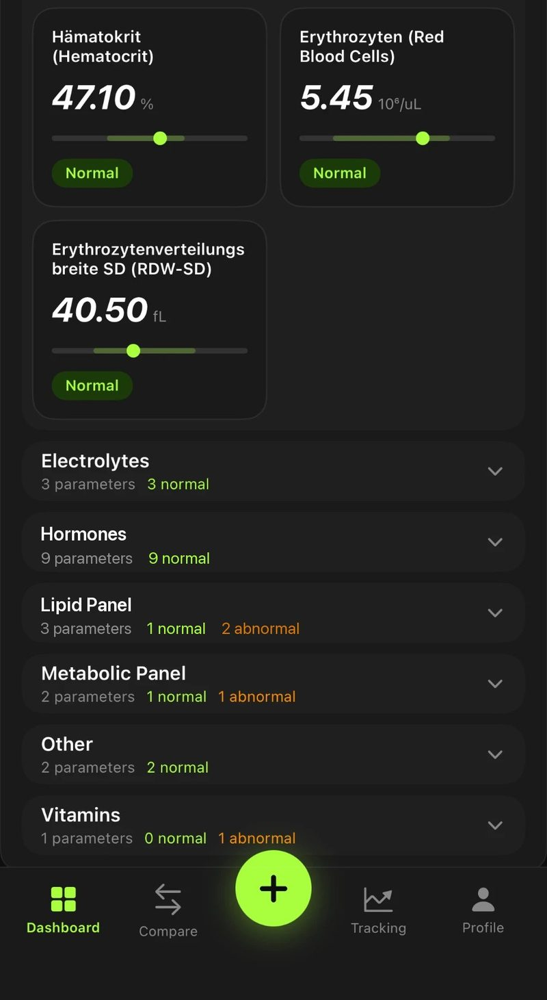
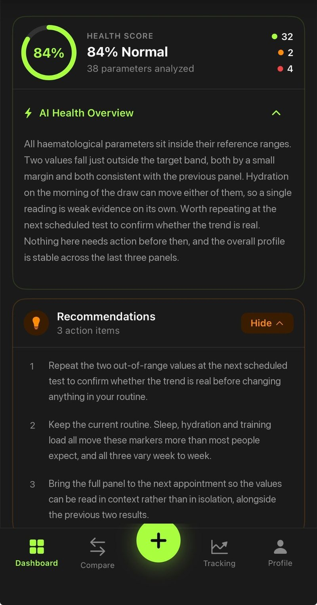

Self-initiated product · iOS, design and development
BloodLog
A lab report you can actually read
A blood test comes back as a PDF with thirty-eight numbers, a reference range in six-point type, and no indication of which of them matter. BloodLog takes that file and turns it into a reading: what is out of range, by how much, and whether it is moving. I built it to get properly fluent in Swift and the Apple toolchain — research, product decisions, design system and code, all solo.
- Role
- Everything — research, product, design system, SwiftUI, data layer, App Store submission.
- Why
- To stop briefing iOS engineers from the outside and learn what the constraints actually feel like.
- Platform
- iOS · SwiftUI · SwiftData · dark interface only.
- Status
- Live on the App Store. V2 approved July 2026.

The information design problem
A lab report is optimised for the doctor who ordered it, not the person it describes. It is a flat table: every parameter given equal weight, ranges printed next to values with no visual relationship between the two, and no memory of the last test. The patient reads it once, understands roughly none of it, and files it. Three months later the next one arrives and the comparison that would actually be informative never happens.
So the app has one job, and it is a hierarchy job. Out-of-range values come first, by name, with the distance from the range shown as a position on a bar rather than as a second number to hold in your head. Everything normal collapses into a category row you can open if you want it. A parameter you care about can be pinned and watched across tests.


The screenshots run on demo data. Real results stay on the device in SwiftData and are never uploaded anywhere I control — which is also why the paywall and the analysis backend had to be designed around a payload that carries values but no identity.
Two complaints that rebuilt the app
V1 shipped and two pieces of feedback came back: deleting a test did not work, and scrolling through the parameters was miserable. Both turned out to be my own cleverness rather than missing features, and both were worth the rewrite.
The delete gesture nobody could find
Roughly ninety lines, deleted
I had built a custom swipe-to-delete: a three-layer ZStack, a DragGesture, and allowsHitTesting juggling. It was disabled while a folder was open — and the newest folder is always open, so for most people there was no delete at all. The gesture that did work fought the scroll view and jittered. It came out and was replaced by a visible ⋯ menu in the folder header, plus a five-second undo toast that hides the row immediately and only commits the delete when the timer runs out.
Forty cards in a flat grid
Scrolling as a symptom
"Scrolling is annoying" was a hierarchy complaint wearing a scrolling costume. Forty-plus parameter cards were rendered in one flat grid with no ranking, so finding the two that mattered meant reading all of them. Grouping them into Needs Attention plus collapsed categories removed most of the scroll entirely. Collapsing now also holds its position — a ScrollViewReader scrolls back to the folder ID instead of letting the list jump.
The third fix was smaller and more embarrassing. Submitting a test dismissed the sheet before the analysis ran, so every backend error was raised into a view that no longer existed. Failures looked like nothing happening. The error now surfaces as a banner on the dashboard with a retry button attached, which is the only place the user is actually looking.
One value, in context and over time
Tapping a parameter is where the app earns its place over the PDF. The gauge puts the reading inside its reference range instead of beside it, so "47.1" and "43 – 49" become one shape rather than two numbers. Below it, the same value across previous tests. Below that, a plain description of what the marker is — served by the analysis backend, with a local dictionary of sixty-odd parameters as the fallback so the screen is never empty offline.

A navigation decision worth naming. Parameter detail was originally a fullScreenCover with a back arrow, which reads as a page you have travelled to and must travel back from. Swapping it for a sheet with detents made it a glance you dismiss — one swipe, no aiming at a target in the top-left corner. Same content, considerably less friction, and it is the change people noticed most.
How it is built
SwiftUI throughout, SwiftData for persistence, and a single theme file holding every colour, radius and type step so the V2 dark redesign was a token change rather than a repaint of each screen. Analysis runs on a small serverless endpoint; everything else, including the entire history, stays on the phone. StoreKit handles the subscription, with the first test free.
- One theme file, dark only
- Four tabs and a floating action button
- Charts drawn with Swift Charts
- Tests, parameters and ranges
- Soft delete behind the undo toast
- No account, no sync, no server copy
- Summary and recommendations
- Comparison briefing between tests
- Local descriptions as fallback